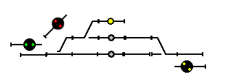

If you click on me, aaa I will disappear.
LogixNG Tutorial - Chapter 10Tables - working with templatesThe panel "Chapter 10 - Tables" has four yards:
How to create one ConditionalNG that controls all four yards?Lets create an imaginary template yard. It will have three turnouts, three signals and two sensors. First we need to give the named beans on the template yard unique names. In this example, we have these names for the named beans in the template yard:
Using the "Table: For each" action aaaa Using the "Listen on beans" actionReferences can not listen on beans, simply because LogixNG can not know in advance which bean a reference will point at. So how do LogixNG knows when the turnouts and sensors change state? For that, we must explicity tell LogixNG to listen on these turnouts and sensors. For this purpose, there is a very special action, "Listen on beans". It doesn't do any action, but it listen on some beans and triggers execution of the ConditionalNG when one of the beans it listens to changes state.To make it easy to use "Listen on beans", you can tell "Listen on beans" to listen on every bean in a row or column of a table. So in this example, we tell "Listen on beans" to listen on all beans in the rows "Left turnout", "Middle turnout", "Right turnout", "Sensor track 1", "Sensor track 2" and "Sensor track 3". Using comments in the tableIt's useful to be able to add comments in the table, especially for large tables. Therefore LogixNG has a simple way to add comments to tables. If the header of a row or column is empty, LogixNG treats that row or column as a comment. So if you want to add a comment on a row, leave the first column on that row empty. And if you want to add a comment on a column, leave the first row on that column empty. If the first cell on a row or column is empty, the action "Table: For each" will skip that row or column entirely.Example:
In this example, we have comments before the turnouts, before the signal masts, and before the sensors. And to make the table easier to read, we have added empty lines above the comments as well. Both the actions "Table: For each" and "Listen on beans" will skip both the empty lines and the comment lines, since the first cell on these rows are empty. Using the Reference expressionOne problem remains. In our example, we have a turnout, a mast and a sensor that only exists in one of the four yards. In some cases, this may cause problems. Therefore, there is a special expression in LogixNG, "Reference", that can evaluate the reference itself. By using "Reference", we can check if a reference is valid and do something only then.In this case, we use "Reference" to check if "Middle turnout" is a valid turnout and only then controls the track 3 with "Middle turnout", "Middle mast" and "Sensor track 3".
|
||||||||||||||||||||||||||||||||||||||||||||||||||||||||||||||||||||||||||||||||||||||||||||||||||||||||||||||||||||||||||||||||||